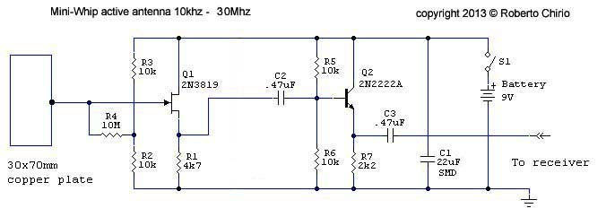
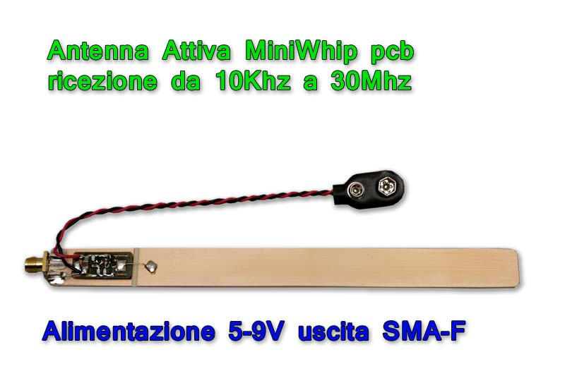
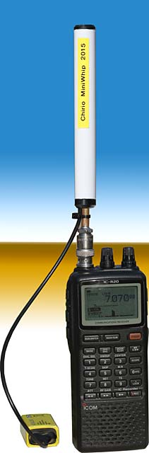
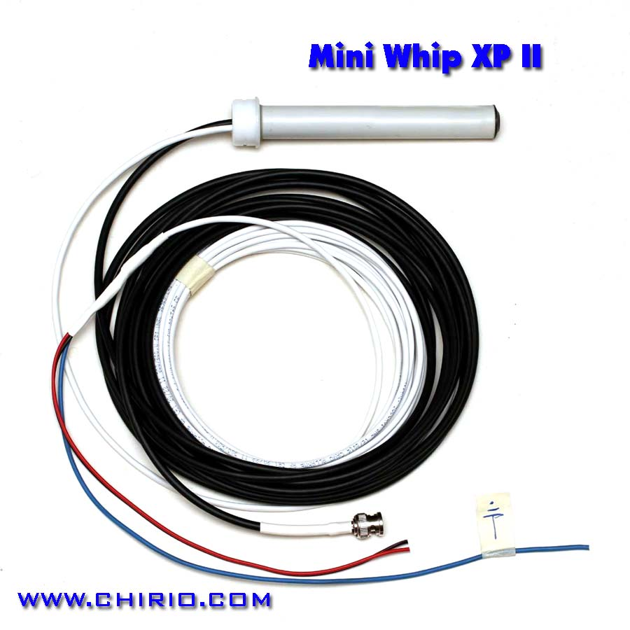
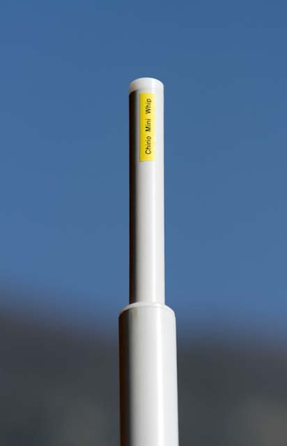
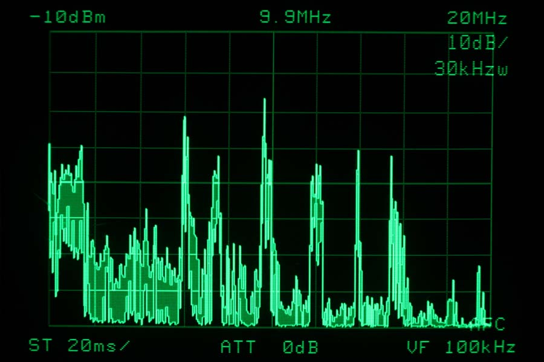
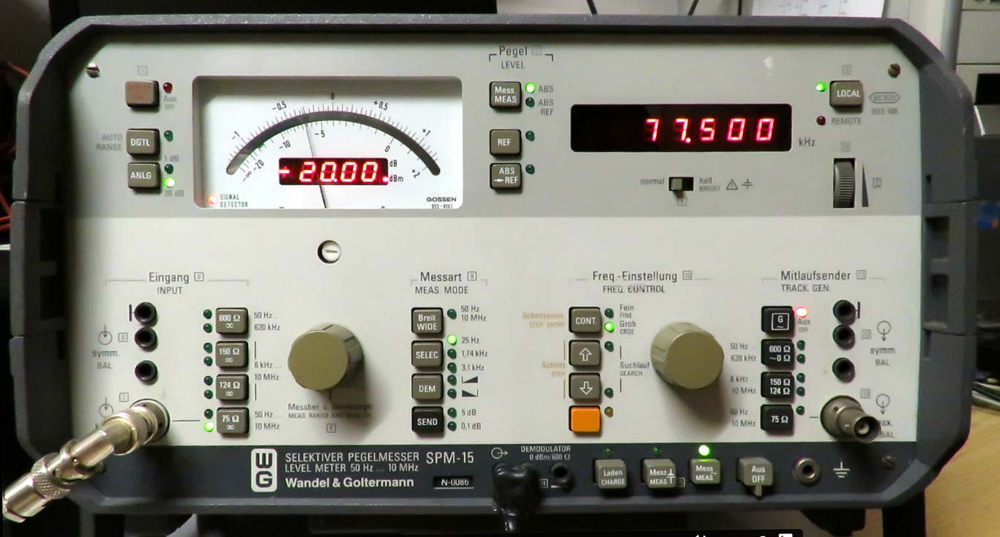
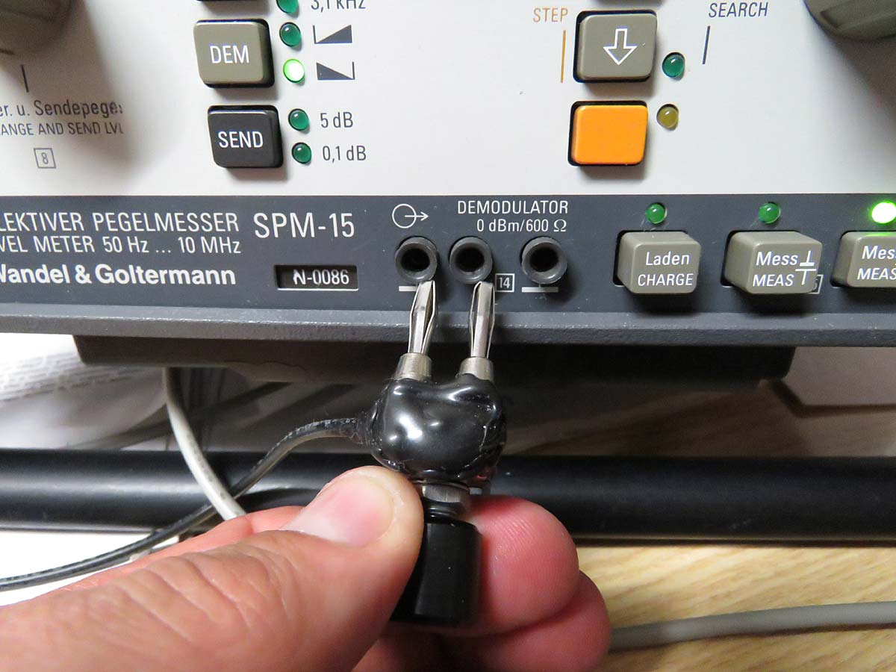
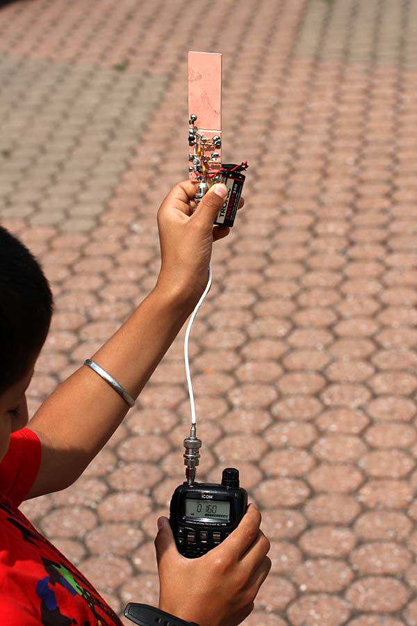

Radio & antennas
Chirio Mini Whip 10 kHz - 30 MHz
Active antenna for HF and VLF band
Page index
August 2013 - February 2018
Active Antenna, small dimensions suitable for receiving signals in the HF band, navtex and meteofax on board ships and also for lower frequencies VLF up to 10 kHz.
Excellent reception for AM and Radio Amateur SSB and CW bands. Suitable for all HF band receivers like ICOM, ALINCO, YUPITERU, YAESU, KENWOOD, Tecsun....
The MiniWhip is excellent for receiving VLF frequencies below 100 kHz where from all over Europe it has been possible to receive GRIMETON RADIO/SAQ signals at 17.2 kHz.
The type of operation is that of a capacitive, electrostatic antenna. The two plates are represented, the first by the receiving plate placed on the board provided, while the second plate is referenced to the ground connection. The reception sensitivity is given by the distance between the active plate and the ground. Moving away from ground improves the input signal as well as the bandwidth towards the low. Arrangements at 3-4 meters from ground level already give significant reception results. No advantages are obtained by increasing the surface of the receiving plate beyond the indicated value.
The MiniWhip is available simple on PCB board, compact for use on scanners and versions for fixed base to be mounted outside on PVC pole with separate cable like the SDR and XP II and CX/F
Modifications and customizations available to meet the needs of radio signal reception enthusiasts. (Write and send an email with your requests.)
MINI-WHIP-PCB

Circuit diagram of basic amplifier/impedance adapter circuit recommended for those who want to experiment (version 2013)
SMD version + PCB board + 9V and BNC-F connector

- SMD board mounted on the antenna plate, complete with BNC connector (female) and 9V battery jack.
- Current draw 5mA (9V)
- Overall dimensions 30 x 110mm, sensitive surface 30 x 80mm
SMD version + PCB board + 9V and SMA-F connector

- SMD board mounted on the antenna plate, complete with SMA-F connector (female) and 9V battery jack.
- Current draw 10mA (5V)
- Overall dimensions 17 x 200mm, sensitive surface 17 x 160mm
Common characteristics
- Bandwidth from 10 kHz to 30 MHz (-30dB), at -80dB reception is still up to 150 MHz
- Output impedance is 200 ohm suitable for pretty much all receiver inputs.
- All MiniWhip can be powered from 5 to 9V.
Signal present on Chirio Mini-Whip PCB (2013), all frequencies from 0 to 20 MHz can be seen. The signal is stronger and many stations come through that are not listenable with a conventional wire antenna. Many signals are very present down to a few tens of kHz. The antenna was mounted outside the house on a 3m PVC pole.

Correct position for using the MiniWhip-PCB with portable scanners, the battery should always be positioned lower than the connector to not interfere with the incoming signal, also the operator's hand and body have a ground effect for the small scanner.
The scanner positioned alone on a table or support far from the operator's body may not receive well or with attenuated signal. In this case provide a ground connection to the antenna/radio BNC.
The best reception is obtained standing upright with scanner in hand and antenna plugged in.
{kind=link}
MINI-WHIP-SR (Black cap)
BNC connector version for Communications Receiver ICOM IC-R20 and all portable scanners.

March 2015
- This new version is designed to apply the Mini-Whip directly to the BNC connector of the ICOM IC-R20, it also works fine with all scanners, HF band receivers such as ICOM, ALINCO, YUPITERU, YAESU, KENWOOD....
- The circuit is modified to reduce noise and has been reduced to insert it in the middle of the antenna body.
- The robust brass tube and the good quality BNC connector allow you to handle the scanner comfortably, holding the battery in hand.
- For weak signals bring the GAIN of the ICOM IC-R20 to the MAX value
- Very good reception across HF. Especially for Long Waves and Medium Waves with significant signals even during daytime hours.
- The active receiving section is protected from electrostatic discharge as it has been placed inside an isolated tube, as already happens with the Mini Whip XP II for stationary use.
- 9V power supply nominal consumption 4.0mA max 6mA
- Length 160mm, diameter 16mm weight 40g
- Robust construction for professional antenna use.
- Not recommended to receive with RTX as some models at power-on send an RF pulse at the output, which can burn the MiniWhip circuit.
Correct position for use with portable scanners, the battery should always be positioned lower than the connector to not interfere with the incoming signal, also the hand has a grounding effect for the small scanner.
The scanner positioned alone on a table or support far from the operator's body may not receive well or with attenuated signal. In this case provide a ground connection to the antenna/radio BNC.
Best reception is obtained in an upright position with scanner in hand and antenna attached. Always in open position and away from obstacles.
{kind=link}
MINI-WHIP-XP II
20 mm tube version for 32 mm PVC pole 6 m cable. Suitable for external mounting.

January 2015
- In this latest version, the amplifier circuit and the receiving board are protected inside the 20mm tube. Everything is completely sealed with resin to resist the weather.
- It should be positioned at a minimum 2-4 meters height, via 32mm PVC tube for electrical use. Optionally use 3 nylon cables for guy bracing.
- The unit is completely sealed, moisture venting occurs downward through the cable passage.
- With the XP II the signal feedline is with standard RG58/U cable length 6mt. and separate power with multi-conductor shielded cable, this solution suitable to reach up to 30-50 meters of feedline cable (on request).
- It always has excellent sensitivity, across all frequencies from 0.10 - 30 MHz improved the low range of LW and MW.
- Medium and strong signals are easily heard up to 150 MHz.
- It is recommended to power with a rechargeable 12V battery, typically with a 12V 7Ah you get over 1 month of runtime. Or through the multi-conductor cable it is possible to bring power into the house, always use only 9-12V battery.
- It is highly not recommended to power the MiniWhip with a mains power supply, linear or switching type, too much noise is introduced to the reception.
- Not recommended connecting to RTX as some models at startup send an RF pulse on the output, which can burn the MiniWhip circuit.


- This is the spectrum of the MiniWhip XP II, powered at 12V, representing all frequencies from 10 kHz to 20 MHz, each horizontal division represents 2 MHz, while the vertical divisions represent signal intensity, there is a clear improvement across the entire received range, and the improvement is more marked for frequencies below 2 MHz.
- Reception was conducted at 22:00 and clearly shows all bands below 20 MHz of shortwave SW and their intensity.
- from 100 kHz to 2 MHz MW and LW received with excellent signal.
- 2 to 5 MHz tropical bands
- The higher peaks represent the 49-meter, 41-meter, 31-meter, 25-meter, 22-meter, 19-meter bands. The last two smaller peaks represent the 16 and 15-meter bands.
- Not represented by the spectrum we can still hear well the bands of 21 MHz, 25 MHz, the 27 MHz CB band and 28 MHz amateur radio band. (All bands more suitable to be listened during the day)
MINI-WHIP-XP-II listening test
January 2018. This video demonstrates how easy it is to receive good signals even without mounting a miniWhip II high on a pole and with only a 9V battery. RAI 2 signal in AM at 1.00 MHz and OM signal on 40m band.
|
MINI-WHIP-XP-II Listening to VLF |
|
|---|---|
|
September 2014 - With all MiniWhip 2015 it is possible to listen to VLF. - Download Software for VLF reception http://dl1dbc.net/SAQ/ - LIST OF VLF STATIONS: http://www.ltpaobserverproject.com/uploads/3/0/2/0/3020041/vlf_transmitters_list_for_sid_monitor.pdf - An example of what can be received below 25 kHz using the pC's sound card input: |
|
|
Friday February 13 2015 appointment with GRIMETON RADIO/SAQ 17.2 kHz |
|
| - Signal received from 14.44.44 UTC use of Spectravue 3.28 program | |
| - Signal also received with SAQ Panoramic VLF receiver 0.94 program | |
| - Translation of received CW code | |
{kind=link}
{kind=link}
{kind=link}
{kind=link}
HF and VLF listening test with WANDEL & GOLTERMANN SPM 15 SELECTIVE LEVEL METER

Signals received in 40-meter band and in VLF, Chirio Mini Whip XP II antenna mounted externally on 10mt fishing pole, 12V battery power. RG58/U cable run 35 meters:
- Signal at 7.1555 MHz 40 meter received on 18/03/2015 17:22 ( Video MP4 14MB )
Russian RSDN-20 Navigation System "Alpha"
- Signal -55 dBm at 11.905 kHz received on 29/03/2015 15:17 ( Video MP4 11MB )
- Signal -54 dBm at 12.649 kHz received on 29/03/2015 15:22 ( Video MP4 8MB )
- Signal -58 dBm at 14.881 kHz received on 29/03/2015 15:37 ( Video MP4 8MB )
SS/TS
- Signal -68 dBm at 60.000 kHz from UK received 29/03/2015 15:47 ( Video MP4 8MB )
- Signal -52 dBm at 77.500 kHz from Germany received 29/03/2015 15:50 ( Video MP4 9MB )

- Signal -27 dBm at 77.500 kHz from Germany received 16/03/2017 10:00 ( Video MP4 20MB )

The image shows how to take the low frequency audio signal to take it to an external amplifier, as the internal speaker is very compromised and nullifies the good quality of reception.
In this case in addition to the sockets a 1K potentiometer was also inserted for volume adjustment.
Listening test with Communications Receiver ICOM IC-R20
- Audio file (Wav) recorded directly with ICOM IC-R20 at 15:10 on October 19, 2013.
Excellent reception in the 40 meter Band, 7.075 MHz from various locations in northern Italy, Chirio Mini Whip XP antenna mounted externally, 12V battery power.
Video: listening test with ICOM IC-R5
( Video Avi 40MB )
September 2013. Excellent reception from 150 kHz to 30 MHz, Chirio Mini Whip antenna, prototype for scanner powered by 9V battery.
How to give new life to radios left in the drawer...
- Many budget radios even though they have shortwave bands do not have external antenna input, but only the extending rod.
- Using the Chirio Mini-Whip positioned on the roof, it comes down with RG-58 cable, the center conductor is soldered to a clip and connected to the rod antenna, the braided shield is connected to an aluminum or copper plate measuring 20x30 that will serve as the base support for the radio.
Optionally you can connect the radio negative to the board with a 0.1uF capacitor, but in practice it has been seen that the ground plane is more than sufficient.
{kind=link}
Sony ICF SW40
- The signal is sometimes quite strong and tends to saturate the input, using the DX/Local switch you can bring it back to normal values, excellent listening to CW at 7.020 MHz, fine tuning in 1 kHz steps helps center the stations well.
- Given the possibility of receiving the 7 and 14 MHz bands, the lack of SSB conversion is felt.
- Commercial stations are received well on all bands, unfortunately medium waves have the internal ferrite antenna and cannot benefit from good external signal.
{kind=link}
Sony ICF 4900
- Here too the stronger stations tend to saturate the input, using the DX/Local switch improves reception.
- Excellent 80s radio with manual tuning, good reception on all shortwave bands, poor for Medium Waves not connected to antenna.
{kind=link}
Silver Crest SWE100 B1
- This little radio costing 9.9 euros sold in LIDL supermarkets surprises with its excellent audio quality, and the 6 SW bands allow good reception of shortwave stations. Good for MW stations connected to antenna.
- Unfortunately the tuning is little reduction geared, does not allow precise centering of the transmitter....
Tips for mounting the MiniWhip:
- Position the antenna high, minimum 4 meters away from cables and electrical sources, for feedline RG58/U cable is fine, even for lengths of 15-30meters. Good results can also be obtained with 75 ohm TV cables or shielded audio cables.
- The higher you go, the more the antenna gains on the signal. Roughly a height of 10-12 meters gives an increase of +10dB compared to 2 meters.
- There are no significant differences in using an iron or plastic pole, since the coaxial cable descending has the same characteristics as a metal pole... important that it be small diameter with nylon guy wires.
- It is important to have a good ground connection, ideally dedicated only to this antenna and not making a common point with the house system. A 1 meter long iron pole driven into moist soil works fine, the connection to the antenna must be as short as possible, avoid loops and long cable runs.
- A better ground would be achieved with 4 steel/copper stakes driven into moist soil where rain gutters or garden tap water drain. Connect the 4 poles with 16mm copper cable and bring with a single cable to a common terminal block, ground everything including the roof metal structures, copper gutters and iron poles.
- Avoid as much as possible interference sources near the antenna, such as neon/LED lamps, electrical cables, brushed motors.

- As shown in the photo to hold the MiniWhip XP II in place on the 32 mm PVC tube, use transparent silicone, other more stubborn glues could block the bushing too much for any removals.
- The silicone also prevents water and rain from entering the PVC tube protecting the BNC connectors and power supply.
- It is always advisable to position the MiniWhip in vertical position even if operation is good also in horizontal position.

- There are often during the year poor propagation conditions, due to "Solar Spots" which could cancel out the signals receivable from the MiniWhip, it is advisable to consult the site http://www.hamqsl.com/solar.html to verify propagation conditions for the various bands.

- The drawing illustrates how to best position the Mini Whip XP II with double descent.
- The PVC pole must be positioned away from obstacles such as walls, fences and tall trees.
- Use nylon tie cables like fishing line or braid.
- Run cables on the ground to avoid RF ingress
- By grounding the shielded power cable, generally the noise is reduced.
- To avoid burning the FET at the input, all MiniWhips must be kept at least 10 meters from a transmitting antenna.
On shortwave a directive and tuned antenna certainly has a more centered and clean signal, but you know the cost and size.....
We're talking about a small antenna that my son uses with the scanner to listen to foreign stations..... it allows you to listen during the day to 50-100 stations at full strength between 100kHz and 30 MHz, while in the evening/night there are over 500 stations from around the world...!!!
The only precaution is to get out of the house and away from any kind of structure and electrical cables, even trees with leaves absorb signal, you need an open place and high up.....and the cell phone off!
This MiniWhip antenna gives enthusiasts the ability to receive weak signals without mounting towers on the roof, or better to go on a mountain trip and listen to radio amateurs and broadcasters perhaps from New Zealand....all while putting to good use a shortwave radio left in the drawer that received very little with its whip antenna.....
Chinese stations are increasing transmission power on shortwave to bring news around the world to their compatriots, a good compact antenna completes the job...

MiniWhip SR 2016 notes from the manufacturer.
After 4 years from conception, continuous improvement and achievement of the current product, it can be said that this antenna has proven to be an excellent product; it has been shipped to regions all over the world, used by technicians and radio amateurs in Oceania, America and Canada as well as South America and Siberia; one antenna even ended up on a ship heading to the South Pole bases and in all European countries.
The MiniWhip SR has proven to be always up to the task of giving satisfactory receptions on all HF Bands, when propagation conditions are present.
Of exceptional robustness with no complaints of mechanical breakage or electrical issues. Operation is still guaranteed with battery discharged down to 3V and at low external temperatures. The actual operating runtime is over 200 hours with a Duracell 9V battery.
Use in the mountains represents the best solution for this antenna, far from sources of interference and coupled with portable scanner receivers, it allows for reception almost impossible with wire antennas positioned in populated centers.
Difficult to improve has been copied by some but the unique and original is this one sold on www.chirio.com.
Turin June 2016 by R.Chirio
MiniWhip SR 2016 notes from the manufacturer.
After 4 years from ideation, continuous improvement and the achievement of current product, it can be said that this antenna has proved to be a great product, has sent to all part of the world, used by technicians and radio amateurs in Oceania, America and Canada as well as in South America and Siberia. An antenna is also finished on the ship towards some bases of South Pole and a bit 'in all European countries.
The MiniWhip SR has been shown to be always up to give satisfactory receptions on all HF bands, when present the propagation conditions.
Highly robust did not complain mechanical failures as well as electrical problems. The operation is guaranteed even with discharged battery up to 3V and with low outdoor temperatures. The real authonomy of operation is over 200 hours with a 9V Duracell battery.
The use in the mountains is the best solution for this antenna, far away from interference sources and couple with portable scanners receivers, allows receptions almost impossible with wire antennas positioned in residential areas.
Difficult to improve has been copied by some but the unique and original, this is sold directly on www.chirio.com .
Turin June 2016 by R.Chirio
Listening tips: stations, bands, frequencies, times and seasons.
- Italian Association for Radio Reception http://www.air-radio.it/
- International Shortwave Broadcast Bands http://www.hamuniverse.com/shortwavebandfreqs.html
- RADIO NEW ZEALAND INTERNATIONAL http://www.rnzi.com/pages/listen.php
- Manuals and diagrams for radio amateurs, CB and BCL http://www.radiomanual.eu/
© Roberto Chirio: all rights reserved.